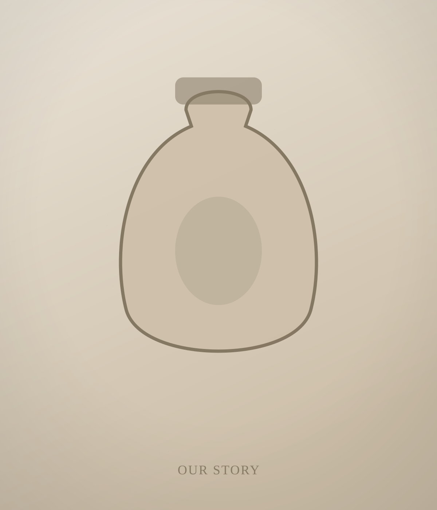

Made to be carried close
GAWU began with a simple observation: people have always kept meaningful things against the body. The amulet, the locket, the worry stone, the snuff bottle closed inside a palm. Long before adornment was fashion, it was function — protection and memory, kept within reach of the skin.
We make wearable vessels for that instinct. Each object is sealed, weighted and sized for the hand, ready to hold what matters to you: a grounding scent, a folded word, a fragment of a place that changed you.
What we believe
That meaning should be carried, not displayed. That the body keeps its own memory, and sometimes needs an anchor it can return to. That scent is the quietest, fastest route back to calm. That an object becomes sacred only when you decide it is.
How we make
Slowly, in small batches, from recycled 925 silver and ethically sourced natural stone. Pieces are finished by hand, so small variations are part of each object — evidence of a person, not a machine. We design for a long life: forms that take a patina, that can be re-shaped, re-scented and re-filled across the years you wear them.
Why "objects"
Because these are more than jewelry. They are wearable ritual objects — companions to the small ceremonies of being a person. The protection, the memory and the scent are yours to assign. We only make the vessel.